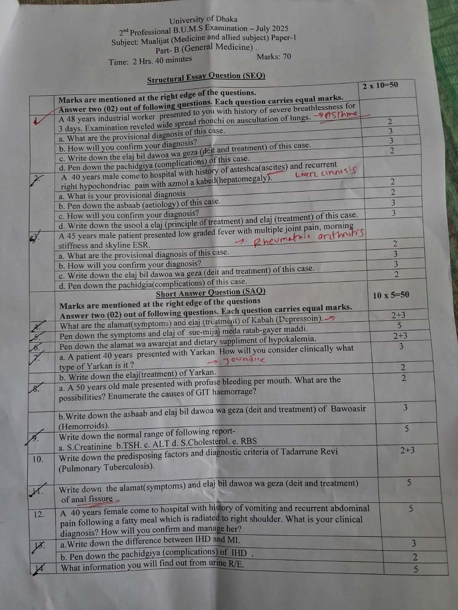

Subject: Mualijat Paper-1 | Final Exam Copy

1. A 48 years industrial worker presented to you with history of severe breathlessness for 3 days. Examination reveled wide spread rhonchi on auscultation of lungs.
Total: 10 MarksThe provisional diagnosis is Zeeq-un-Nafas Shabi, caused by the accumulation of morbid, viscid phlegm (Balgham-e-Ghaleez) in the bronchioles. Clinically, this correlates to the modern diagnosis of Acute Exacerbation of Bronchial Asthma (specifically Occupational Asthma given the industrial history).
Usool-e-Elaj: Immediate avoidance of occupational triggers. First, Nuzj (concoction) of thick phlegm, followed by Tanqia-e-Mawwad using Mushilat-e-Balgham. Finally, Taqwiyat-e-Riya (strengthening the lungs) and Tawsi-e-Shuab (bronchodilation).
Elaj bil Dawoa (Pharmacotherapy):
Elaj bil Geza (Dietotherapy):
2. A 40 years male come to hospital with history of asteshca(ascites) and recurrent right hypochondriac pain with azmol a kabed(hepatomegaly).
Total: 10 MarksThe provisional diagnosis is Istisqa-e-Ziqqi occurring as a direct complication of Zoaf-e-Kabid and Su-e-Mizaj Kabid Barid. Clinically, this correlates with the modern diagnosis of Liver Cirrhosis with Ascites secondary to Portal Hypertension.
Usool-e-Elaj: Restore Hararat-e-Ghariziya (innate heat) using Musakhkhin-e-Kabid (warming) drugs. Evacuate accumulated fluid via Idrar-e-Baul (diuresis) and Tariq (diaphoresis). Prevent further hepatic damage.
Elaj (Treatment):
3. A 45 years male patient presented low graded fever with multiple joint pain, morning stiffness and skyline ESR.
Total: 10 MarksThe provisional diagnosis is Waja-ul-Mafasil Balghami. The clinical presentation of symmetrical polyarthritis and morning stiffness > 1 hour strongly correlates with the modern diagnosis of Rheumatoid Arthritis.
Usool-e-Elaj: Tanqia-e-Mawwad (evacuating the morbid *Balgham*) followed by Muhallil-e-Waram (anti-inflammatories) and Musakkin-e-Alam (analgesics). Normalize the Mizaj.
Elaj bil Dawoa:
Elaj bil Geza: Avoid Aghziya Barida (cold/damp foods like rice, curd). Promote ginger, garlic, and turmeric.
Alamat:
Usool-e-Elaj: Kabah is caused by Ghalba-e-Sawda (dominance of black bile) shifting the brain's Mizaj to Barid Yabis (Cold & Dry). Treatment demands Tanqia-e-Sawda and Taadil-e-Mizaj using Mufarrihat (exhilarants).
Elaj (Treatment):
(Note: Abnormal wet dyscrasia of the stomach without physical accumulation of matter).
Symptoms:
Usool-e-Elaj: Restore stomach heat and absorb abnormal moisture using drugs and diets of Har Yabis (Hot and Dry) temperament. As it is *Gayer Maddi* (non-material), no *Tanqia* (evacuation) is required, only qualitative correction.
Elaj & Geza:
Alamat: Hypokalemia (Serum K⁺ < 3.5 mEq/L) correlates with Zoaf-e-Asab and Zoaf-e-Uzlati. Manifests as muscle weakness, cramps, paralytic ileus, and palpitations. ECG changes: prominent U waves, flattened T waves, ST depression.
Note: Normal Serum Potassium (K⁺) range is 3.5 - 5.0 mEq/L.
Management:
Differentiating Yarkan (Jaundice):
Usool-e-Elaj: Focus on Tasfiya-e-Dam (blood purification), resolving hepatic inflammation, and flushing out excess Safra (yellow bile) through urine using Mudir-e-Baul (diuretics).
Possibilities: Hematemesis (Upper GIT) or Hemoptysis (Respiratory). Context implies Upper GIT bleed.
Causes of Upper GIT Haemorrhage:
Modern Mgt: Immediate IV fluids, cross-match blood, IV PPI (Pantoprazole), and urgent Endoscopy.
Unani Asbaab: Accumulation of Mawwad-e-Sawdawi (melancholic humors) in the anal veins, usually secondary to chronic constipation (Qabz).
Usool-e-Elaj: Relieve constipation using Mulayyanat (laxatives). If bleeding, use Habis-e-Dam (hemostatics).
Predisposing Factors & Clinical: Unani literature links it to Zoaf-e-Riya (lung weakness) leading to Sil (wasting) and Daq (hectic fever). Modern predisposing factors include overcrowding, malnutrition, and immunocompromised states (especially HIV/AIDS). Clinical buzzwords: Significant weight loss, chronic cough > 2 weeks, evening rise of temperature, and night sweats.
Diagnostic Criteria:
Alamat (Shiqaq-ul-Miqad): Severe tearing pain during defecation, streaks of bright red blood on stool, and severe sphincter spasm.
Usool-e-Elaj: Eradicate constipation, heal the mucosal tear, and relieve anal sphincter spasm.
Clinical Diagnosis: Waram-e-Keesa-e-Safra due to Hasa (gallstones), which clinically correlates to Acute Cholecystitis / Biliary Colic. The history perfectly matches the "4 Fs" risk factors (Female, Forty, Fat/Fatty food trigger).
Confirmation: USG Abdomen to detect gallstones and gallbladder wall thickening.
Management:
Unani Context: Both correlate broadly with Zeeq-un-Nafas Qalbi due to Suddah (obstruction) in Urooq-e-Qalb.
| Feature | IHD (Stable Angina) | MI (Myocardial Infarction) |
|---|---|---|
| Pathology | Ischemia (inadequate blood flow) due to narrowing. | Necrosis (tissue death) due to complete blockage. |
| Damage | Temporary & Reversible. | Permanent & Irreversible. |
| Pain Relief | Relieved by rest or Sublingual Nitroglycerin. | Not relieved by rest; requires IV opioids (Morphine). |
| Cardiac Markers | Normal. | Elevated (Troponin, CK-MB). |
In Unani medicine (Tafseel-e-Qaroora), urine color (Lawn) and consistency (Qiwam) are primary indicators of dominant humors (Akhlat). Modern Urine R/E evaluates:
Until our special day arrives...